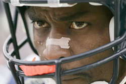

After switching to the new version of VMWare, the server appeared to have some issues displaying the site. A month later, I tried rebooting the virtual machine again and it magically worked. Voila. However, the database still seems to have some issues. I need to overhaul the architecture of this site, so theoretically any day now you might see a whole new look. Theoretically, of course. More likely next year.
Back Online
Posted January 25 2009 5:36PM by Michael
Apparently MichaelWelburn.com has become so popular that the comments for some of the older stories were getting spammed. I'm relatively sure that I don't have 10,000 legitimate comments on this site. Until I find the willpower to figure out a good way to prevent the spam, I just disabled the posting and reading of comments. Sorry for the inconvenience (to both of you).
Comments De-Activated
Posted September 10 2008 11:23PM by Michael
On the Big Ten Network's 'Friday Night Tailgate' (yes, I find it surprisingly entertaining), they have a game to see how well teammates know each other. Considering Arrelious Benn and Vontae Davis have been friends for a long time, I thought they were a shoo-in to dominate... ...that didn't happen, but they did crack me up.
Rejus and Vontae on Big Ten Network
Posted September 5 2008 10:33PM by Michael
Overall, my commute to work in the morning is very peaceful. I get on the train every morning, put in my sweet Shure headphones, and take a 40 minute nap. However, once the train arrives at Union Station there is always a few people that don't realize that there is a massive hoard of people behind them trying to get to work. The culprits are the following: I have another short story that falls under this category as well: One day I was commuting to work and sitting at the far end from the stairs on the upstairs level. As the train pulled into the station, I was getting ready for all the people ahead of me to get up and leave (many of the seats forced the travelers to put their legs in the tiny aisle). For some reason, the vast majority of the people just sat there reading their newspapers. Five minutes later, they were still there, acting like they didn't realize we pulled into the station. At this point, I just wanted to make sure I got off the train before it took off back to the suburbs. Soon after they slowly got their things together and left. Needless to say, I haven't sat on the top level since that day.
The Commute to Work
Posted July 28 2008 8:13PM by Michael
This guy likes to swerve back and forth on really narrow stretches of hallway or sidewalk in an accidental attempt to not let anyone walk by. Sort of like a beat up old car on a 2 lane road that is straddling both lanes going well under the speed limit
Normally girls, these two buddies act like they haven't seen each other in years as they take up the entire width of the hallway/sidewalk. One time I was walking and there were actually 4 people walking side by side down the sidewalk and I actually had to walk in the street to get around them. The sad part is I see the same people doing this all the time.
Someone got the brilliant idea to use a briefcase on wheels even though they have a smaller bag than 95% of the people on the street. And immediately off the train, they extend the handle and start wheeling. Except there is a whole train of people slowly making their way to the door. And this person (yes, I have seen guys doing this too, even guys in suits) just wheels their bag behind them without looking, doing a little swerving here and there. I can understand if you are carrying some obscenely heavy item (or are weak), but what middle-aged guy can't carry a laptop and some papers...
Even better, when I was looking for a picture of this online, I even found an article claiming that this was the cool new thing to do. I hope that in the past year this 'trend' has died. Somehow I can't find any pictures of this phenomenom online, and I even have tried in the past to discretely taking a picture of one of these people, but they are too quick to hide when the paparazzi show. Please, do not contribute to this problem by purchasing one of these. I beg you.
It has been an inevitable event for the last couple of years of injury, but Rod Smith has finally decided to retire. This officially robs me of my favorite athlete of my young life. I remember proudly wearing my Rod Smith jersey to middle school for the Super Bowls. I still am waiting to find a discount for an authentic Rod Smith Denver Broncos jersey, but someday I am sure I will give in. For more information on how this occurred, let me direct you to the tale of a young child. Now I know what you must be thinking: who are my remaining favorite players? The answer to that is simple.
Rod Smith Retires
Posted July 27 2008 10:19PM by Michael
Played at Illinois, is a beast. Even gets me cheering for the Jazz (and actually got me to watch NBA games). I used to have Richard Hamilton as a favorite player in his Wizard days, but ever since he became a Piston we have drifted apart. His game is exactly like how I would ideally play, minus the whole part about him being in shape.
I can also proudly say that I actually bought a Beckett graded rookie card (probably the plainest looking one around, nothing special about it whatsoever) when he was terrible his rookie year. Last time I checked there were 59 cards graded 9.5 and I had the only 10.
Playing at Illinois, is also a beast. Great timing as the torch was passed to him from Rod last year. I actually planned my day around his college announcement on that cold November day.
I wanted to force someone like Troy Tulowitzki or Carlos Marmol here, but I just can't. I'm not all that sure I've ever had a 'favorite' baseball player.